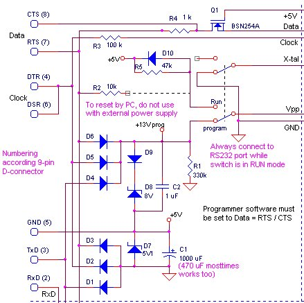
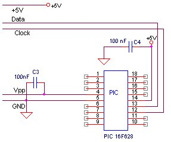

| Software
Download
|
Mindstorms PIC programmer
(hardware version 4)
|
23 december 2001
|
Why
another PICprogrammer 
The reason is simple, everything I tried
didn't work for 100% (specially programming the normal version of the PIC16F84
give rise to problems). For more background information and things I tried,
see hardware version 1. Version
2, which contains some needless applications components can be found here.
Specifications
The programmer connects to a free RS232
port of the PC and doesn't need external power supply.
The programmer is tested under windows-98
on a PII-66 and a PIII-1000.
Everything, including sources, is available
(for free of course).
Tested
PICs (ordened by family)
| 16x8x |
16F62x |
16F87x |
|
|
|
16F84
16F84A |
16F628 |
16F876 |
|
|
|
Operating
Instructions
It's important to
follow the steps described below in the right order, because applying a
voltage to the programmer pin of the PIC, without the PIC is supplied from
a +5Volt source, can damage the PIC.
-
start the program and select the right
RS232 port (this will ensure that the voltage on the programmer
will be ok) The voltages generated by the circuit can be tested before
inserting a PIC, see
here)
-
set the switch on the programmer in
the run mode (this will ensure that the program voltage will not
be present until the +5Volt is present)
-
now connect the programmer to
the selected RS232 port
-
now you can savely put the switch on the
programmer in program mode
Circuit
The circuit shown below is straight forward.
The major differences with other simple programmers is the feedback lines
for both clock and data signals (see for futher details, the current
design).
You can roughly test if your serial port
is capable of delivering enough current, by connecting a resistor between
DTR and GND and measuring the voltage.
Finding the optimal signal connections
|
Programming |
Running |
RCX |
MindScope |
| DTR |
program clock,
when 0 = +5V power |
0 = 5V power supply for PIC |
not used, low |
1 = power generating for batteryless tower |
| DSR |
echo of DTR (clock) |
- |
- |
- |
| RTS |
program data,
power for RS232 from PIC
when 0 = +5V power |
1 = enable PIC,
power for RS232 |
1 = tower on
0 = tower off (after 3 seconds) |
1 = tower on
0 = tower off |
| CTS |
echo of RTS (data)
or
Read data |
- |
= RTS,
used to check if tower is present |
= RTS |
| TxD |
+5V power supply |
RS232 data to PIC
when 0=+5V power supply |
TxD |
TxD |
| RxD |
- |
RS232 data from PIC,
gets positive power supply from RTS |
RxD |
RxD |
Start the program, Tools / Settings
/ Commport / ...
Connect to right port, enable DTR and
measure the voltage between DTR (pin 4) and GND (pin5)
The voltage should be >=5Volt, for the
resistor value yields
1 kOhm
--> 5 mA (will do for the new devices, i.e. 16F84A)
500 Ohm
--> 10 mA (necessary for old devices, i.e. 16F84
The
NOP programmer circuit
You can just connect a PIC (without an oscillator
X-tal) as shown below.
or
You can connect a complete application to this
programmer.
In that case the application will also by supplied
by the RS232 lines.
A good example of this is the RCX-remote control.
In this example also a fast serial interface
is shown, which can be very useful for debugging.
IMPORTANT
always (dis-)mount the PIC with the switch in
"RUN" mode.
Function of R2
The software controls the reset of the processor
through R2.
BUT, if the application should also be battery
powered, like in the RCX-remote control, you should not connect R2 as indicated.
The reason for this is that if no RS232 power is generated, the cicuit
around Q1 will draw excessive current, draining your batteries. |
 |
| Connecting
a PIC without application
ERATA: in the version before 23-12-2001, the program
data and clock lines were exchanged. |
 |
Testing
the circuit
-
check the wiring
-
always start the program before connecting
the circuit to the RS232 port (another program could set the RS232 port
totally wrong) DON'T INSERT THE PIC YET !!
-
goto menu Tools / Settings / Commport / ...
CTS and DSR panels light yellow
-
set the switch in RUN mode and connect the
circuit to the RS232 port
-
now activate the connect checkbox, and CTS
and DSR panels should light green
-
activate DTR checkbox and the panel on the
right of DTR should light red
-
activate RTS checkbox and the panel on the
right of RTS should light red
-
now set both DTR and RTS inactive
-
Now test if the voltage on the PIC-foot are
according to the next table
With the switch in RUN mode, approximally
the following voltages should be measured at the mentioned PIC pins
pin 4 (MCLR)
= 0 Volt
pin 12 (program clock)
= 0 Volt
pin 13 (data clock)
= 1.5 Volt
pin 14 (Vdd) = 5 Volt
All other pins should
read 0 Volt. |
Setting the program data line (RTS or
DTR) active:
pin 4 ==> 5 Volt
pin 13 ==> 4 Volt
Setting the program clock line (DTR or
RTS) active:
pin 12 ==> 10 ... 14
Volt |
Set DTR and RTS inactive again, and then
the program/run swicth in "program"
Activating DTR and/or RTS and/or send-$FF:
pin 4 ==> 10 ... 14
Volt |
-
Leave the settings window
-
set program/run switch in "run"
-
Disconnect the programmer from the serial
port
-
Insert the PIC
-
connect to the serial port again
-
set program/run switch in "program"
-
now everthing should work correctly and you
can read for instance the device ID
History
|
|
| ideas for the future |
-
some suggest small capacitors (of 300 pF ?)
are needed across data and clock lines ?
|
| 3-11-2001 |
-
disabling the oscillator, in case a X-tal
is connected to the PIC
-
connector with signals for in-circuit-programming
of PIC's on other boards
-
connecting an external power supply (if more
electronics is present)
-
make it fully compatible with the cheaper
(and complexer) 16F627/16F628
|
| October 2001 |
-
Idea added to increase the program voltage
in case of bad RS232 lines
|
| Septemnber 2001 |
|